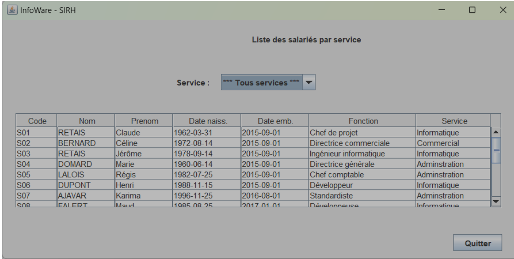
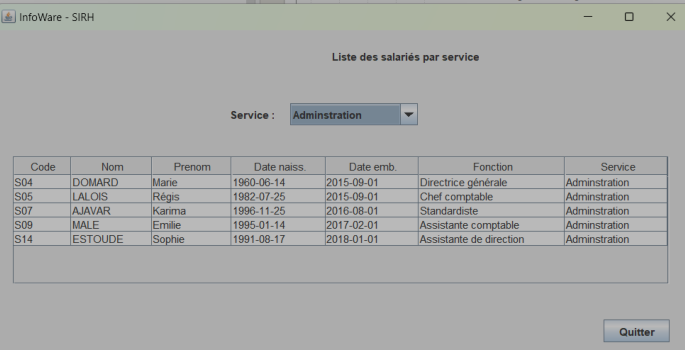
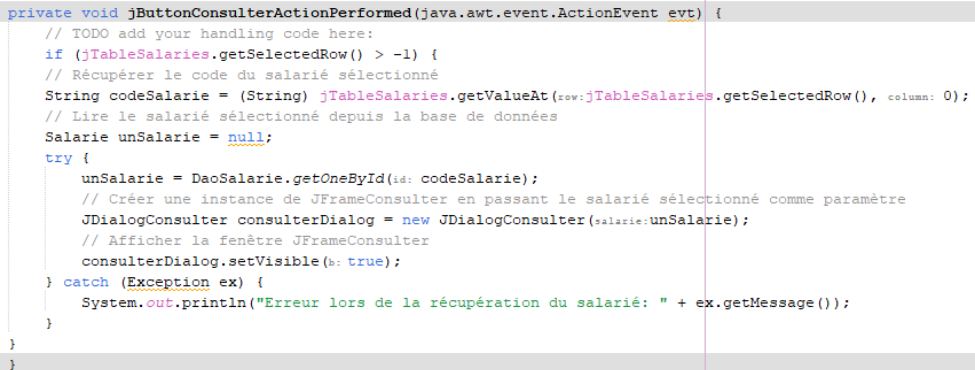
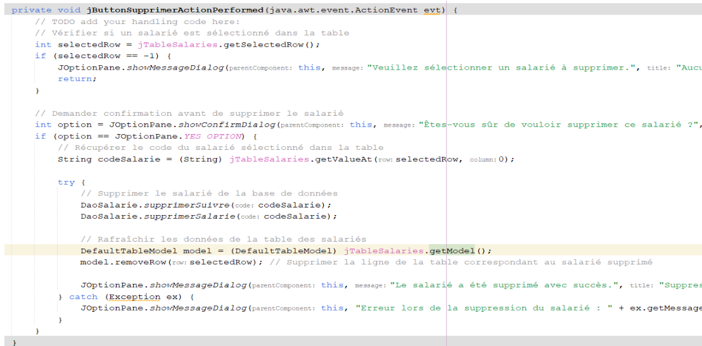
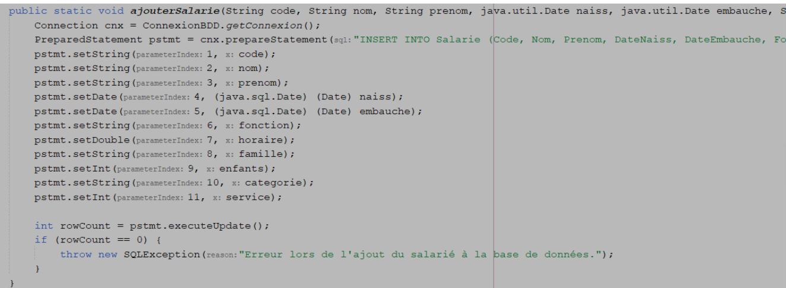

Projet Java
1 - Découverte du projet et premiers ajouts
On dispose d’une liste déroulante permettant de sélectionner les employés en fonction de leur service a été implémenté mais n’est pas fonctionnel. Un bouton « Quitter » permet de fermer l’interface graphique
On commence par ajouter la classe "Categorie" que l'on rajoute à la classe "Salarie" comme attribut. Ensuite on a créé la classe DaoCategorie" pour pouvoir intéragir avec la BDD et récupérer les catégories.
2 - Tri par service
Ensuite nous avons complété la méthode " jComboBoxLesServicesActionPerformed" pour permettre de n'afficher que les salarié du service séléctionné.
amélioration de l'interface
La suite du projet consistait à ajouter 3 boutons : un pour afficher les informations d'un salarié précis, un second pour supprimer un salarié et un dernier pour en un rajouter un.
3 - Ajout de fonctionnalités
Voic la méthode pour afficher les informations du salarié voulu.
Celle permettant la suppression d'un salarié (à noter que la suppression d'un salrié nécessite d'abord de supprimer le "suivie" avec une autre méthode au préalable).
Et celle permettant d'ajouter un salarié.
Conclusion
Synthèse des compétences :
- S'assurer que l'ajout d'un salarié soit pris en compte dans la liste des salariés (java) et dans la BDD (SQL) (vérifier les conditions de la continuité d’un service informatique)
- faire le bilan sur ce qui a été fais, se fixer des objectifs (Développer son projet professionnel)
À propos
Contact
lworms@la-joliverie.com
06.81.52.05.50